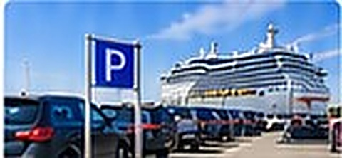
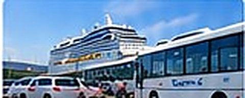
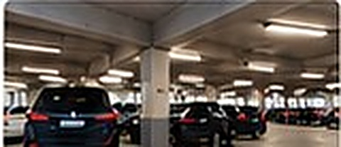
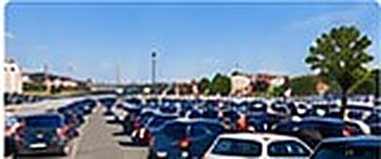

Unsere Empfehlung
Port Parking Kiel
★ 4,8 (1.248) · 📍 Ostseekai Kiel
✔ Kostenlos stornierbar
🛡 Allianz Parkplatzschutz inklusive

Shuttle-Service
Kiel Shuttle Parking
★ 4,6 (892) · 📍 Ostuferhafen
✔ Kostenlos stornierbar
🛡 Allianz Parkplatzschutz inklusive

Halle & Parkhaus
Ostsee Parkhaus Kiel
★ 4,4 (621) · 📍 Norwegenkai
✔ Kostenlos stornierbar
🛡 Allianz Parkplatzschutz inklusive
Valet Parking
Kiel Valet Service
★ 4,7 (410) · 📍 Ostseekai Kiel
✔ Kostenlos stornierbar
🛡 Allianz Parkplatzschutz inklusive

Günstiger Preis
City Parking Kiel
★ 4,2 (326) · 📍 Schwedenkai
✔ Kostenlos stornierbar
🛡 Allianz Parkplatzschutz inklusive